<!-- TODO: figure out if the <nav> should go inside of a <header> element. -->
<nav class="orl-navbar-header" [class.is-next-version]="isNextVersion">
<!--   <a mat-button class="orl-button" routerLink="/" aria-label="Angular Material">
    
    <span>Orlando Open Data</span>
  </a> -->
  <a mat-button class="orl-navbar-hide-small orl-button" *ngFor="let key of sectionKeys"
    [routerLink]="key">{{sections[key].name}}</a>
  <a mat-button class="orl-navbar-hide-small orl-button" routerLink="guides">Catalog</a>
  <div class="flex-spacer"></div>
<!--   <version-picker></version-picker> -->
  <theme-picker></theme-picker>
<!--   <a mat-button class="orl-button orl-navbar-hide-small" href="https://github.com/angular/components"
    aria-label="GitHub Repository">
    
    GitHub
  </a>
  <a mat-icon-button class="orl-button orl-navbar-show-small" href="https://github.com/angular/components"
    aria-label="GitHub Repository">
    
  </a> -->
</nav>
<nav class="orl-navbar orl-navbar-show-small">
  <a mat-button class="orl-navbar-link" *ngFor="let key of sectionKeys" [routerLink]="key">{{sections[key].name}}</a>
  <a mat-button class="orl-navbar-link" routerLink="guides">Catalog</a>
</nav>
